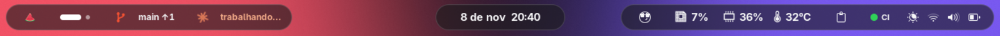
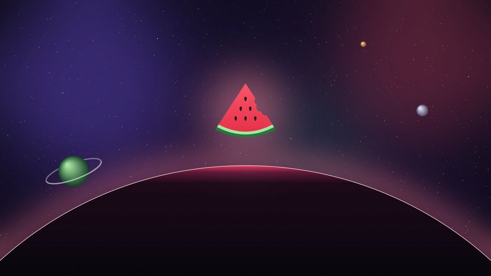
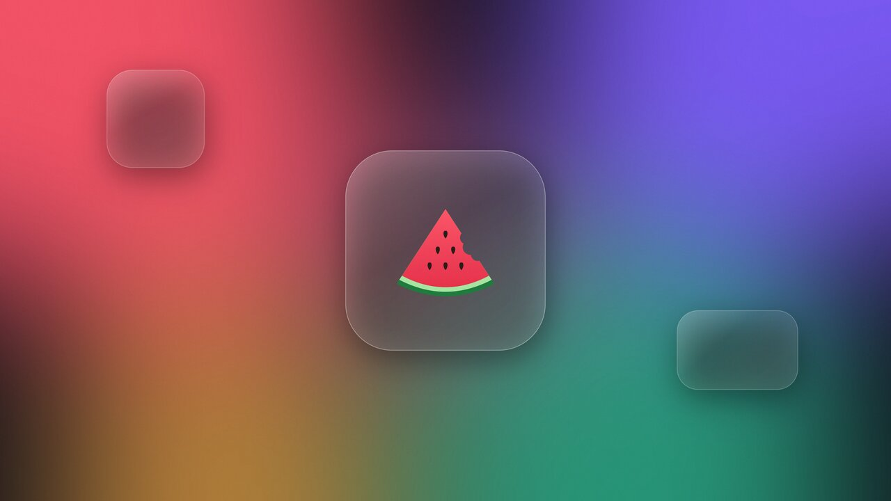
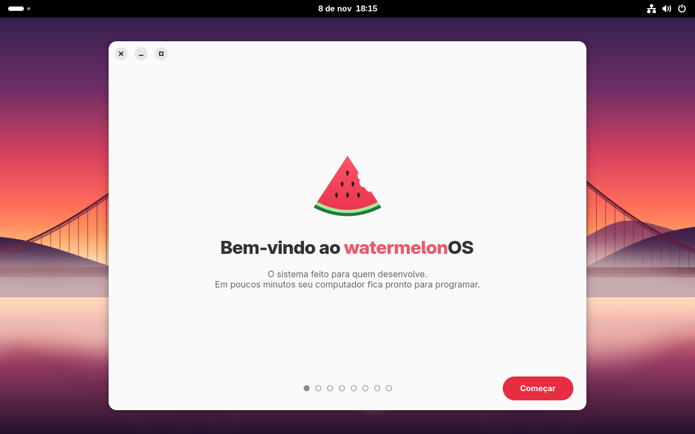
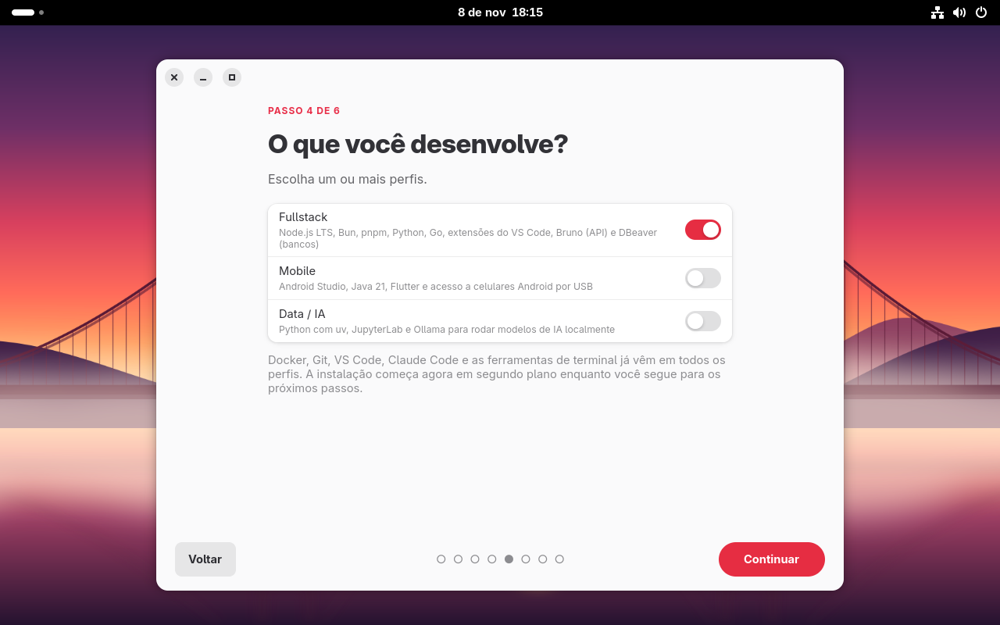
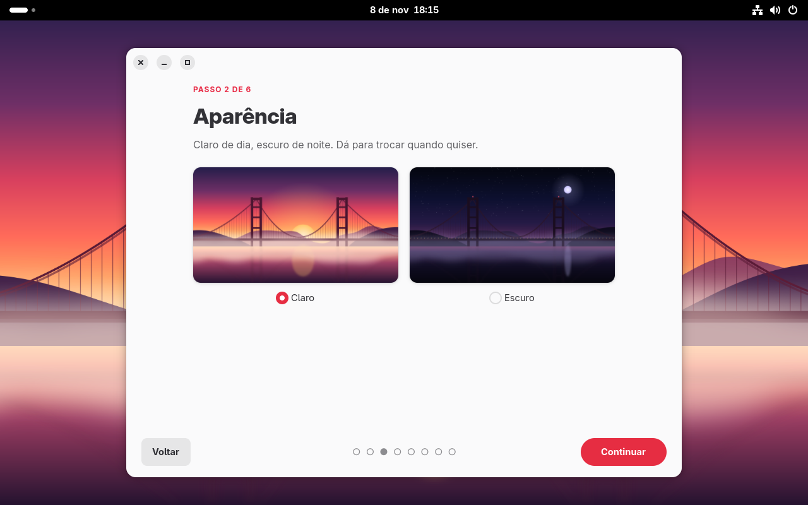
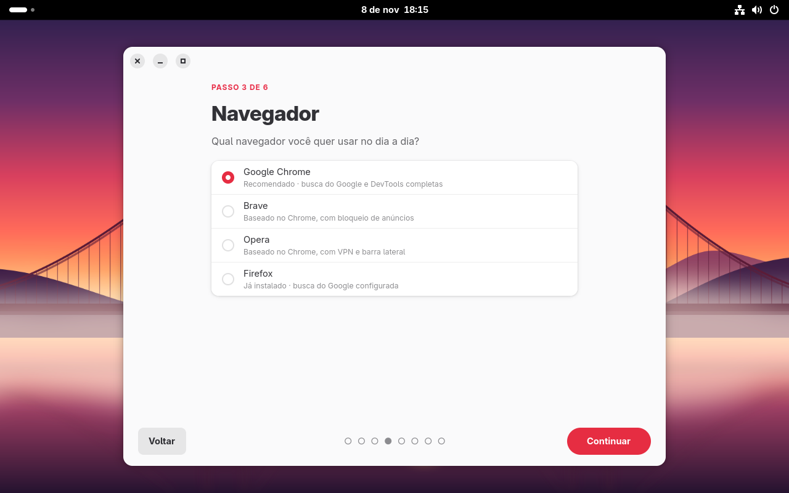
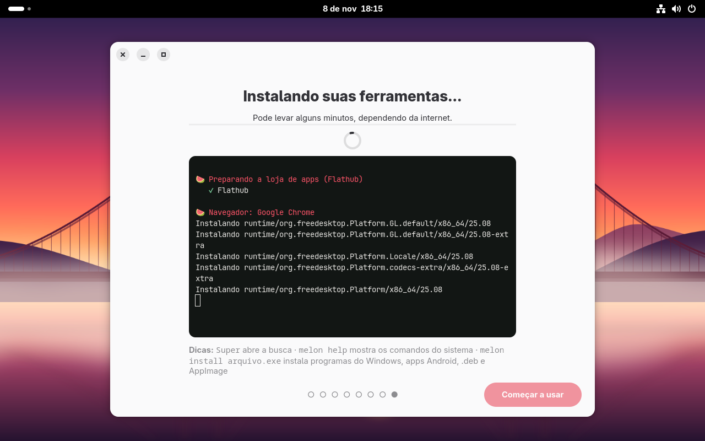
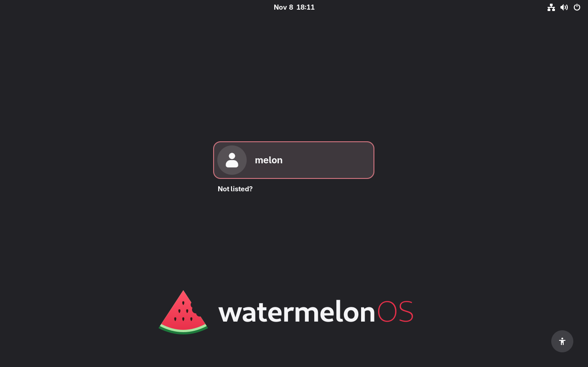

O sistema operacional feito para quem desenvolve. Instale, entre no GitHub e no Claude, e em minutos seu computador está pronto para programar.
Recursos
Chega de passar dois dias montando o ambiente depois de formatar. Tudo que um dev usa já vem instalado e configurado, e o que é específico do seu trabalho entra com um clique.
Wi-Fi, aparência, navegador, perfis de dev, GitHub e Claude. Poucos cliques e está tudo pronto.
melon setup git faz login, cria a chave SSH, envia para o GitHub e assina seus commits.
Seu par de programação com IA já instalado. Login direto no assistente de boas-vindas.
Fullstack, Mobile e Data/IA: Node, Bun, Python, Go, Java, Flutter, Android Studio, Jupyter, Ollama…
Docker sem sudo, Dev Containers e VS Code com fontes e terminal já configurados.
melon install abre .exe, .apk, .deb, .rpm e AppImage. Ou dois cliques no arquivo.
Atualizações automáticas e atômicas, aplicadas no próximo boot. A versão anterior fica sempre disponível no menu.
Nada roda à toa: Docker, Android e Windows só ligam quando você usa. Sem limite de file watchers para Vite e Webpack.
Barra inteligente
Três ilhas de vidro flutuando no topo da tela. Elas mostram em que branch você está, o que o Claude está fazendo, a música tocando e seus servidores rodando, e fazem as ações comuns com um clique.

main ↑1), Claude trabalhando, relógio, CPU e memória, status do CI.⊞ K e digite o que quer: modo escuro, foco, Wi-Fi, print, abrir um repositório, encerrar a porta 3000, ou uma conta como 2*(3+4).
Branch, arquivos alterados e commits para enviar do projeto em que você está no terminal. Commit, push, pull, trocar de branch e criar PR com um clique, e o status dos checks do PR.
Mostra quando o Claude Code está trabalhando, quando precisa da sua aprovação e quando terminou, mesmo com o terminal escondido. O menu traz as sessões e o uso recente.
A capa e o nome da música entram na ilha do relógio, com controles ao passar o mouse. Funciona com Spotify, navegadores e qualquer player.
Seus servidores de desenvolvimento aparecem na barra: :3000 next dev, :5173 vite. Um clique abre no navegador e outro encerra.
Uma bolinha verde, amarela ou vermelha com seus últimos builds, e uma notificação quando eles terminam.
Pomodoro de 25 minutos na barra, com as notificações em silêncio. Ao terminar, toca um som e começa a pausa.
O Claude escreve a mensagem do commit, abre o PR com título e descrição, revisa o que você vai enviar e ajuda a resolver conflitos. Tudo pela ilha do Git ou com melon commit, melon pr e melon revisar.
melon tarefa "login com Google" cria uma worktree e uma branch e abre um Claude só para ela. Vários trabalhando ao mesmo tempo, sem um atrapalhar o outro.
Quando ele precisa da sua aprovação, chega um aviso que, com um clique, traz o terminal certo para a frente. Também avisa no celular.
⊞ K e ? como desfaço o último commit. Ou "explicar o que copiei" para entender um erro, e melon standup para a daily.
O app Personalizar troca cursor, ícones, papel de parede, cores e fontes, muda o dock de lugar e liga ou desliga cada recurso da barra.
Telas
Visual neutro e limpo, no estilo macOS: barra em ilhas de vidro, botões 🔴🟡🟢 nas janelas, cursor do Mac, papéis de parede originais e sons do sistema próprios.








Atalhos
Os atalhos que você já conhece de outros sistemas funcionam aqui, e alguns que nenhum outro sistema tem. Super é a tecla com o logo do Windows ⊞, entre o Ctrl e o Alt.
| Atalho | O que faz | Inspirado em |
|---|---|---|
| Super K | Paleta de comandos: digite o que quer fazer | 🍎 Raycast |
| Super Espaço | Busca: apps, arquivos, calculadora e configurações | 🍎 Spotlight |
| Espaço num arquivo | Pré-visualiza sem abrir (imagens, PDFs, vídeos, código) | 🍎 Quick Look |
| Super V | Histórico da área de transferência (últimos 100 itens) | 🪟 Windows |
| Super . | Seletor de emoji | 🪟 Windows |
| Super ← → | Encaixa janelas lado a lado, com layouts em grade | 🪟 Snap Layouts |
| Ctrl Shift Esc | Gerenciador de tarefas | 🪟 Windows |
| Super E | Abre os arquivos | 🪟 Windows |
| Super D | Mostra a área de trabalho | 🪟 Windows |
| Shift Super S | Print de uma área da tela (também Print) | 🪟 Ferramenta de Captura |
| Shift Super R | Grava a tela em vídeo ou GIF | 🍎 macOS |
| Ctrl Print | Print com setas, textos e destaques (Flameshot) | 🐧 Linux |
| F12 | Terminal suspenso que desce do topo da tela | 🐧 Quake |
| Ctrl Alt T | Abre o terminal | 🐧 Linux |
| Super Q | Fecha a janela | 🍎 Mac |
| Alt Tab | Alterna entre janelas (Super Tab entre apps) | 🪟 🍎 |
| Super N | Central de notificações e calendário | 🍎 Mac |
Rodou um build de 3 minutos e foi para outra janela? Chega uma notificação ✅ ou ❌ quando ele terminar.
Envie arquivos, veja notificações e compartilhe a área de transferência com o Android, como o AirDrop.
A tela fica mais quente do pôr ao nascer do sol. Seus olhos agradecem no deploy da madrugada.
Um clique na barra impede a tela de apagar durante apresentações e builds longos.
Terminal
Ghostty com aceleração de vídeo, zsh configurado e as ferramentas que os devs mais gostam, sem precisar montar nada.
z projeto pula para qualquer pasta que você já visitou.melon env guarda seus .env criptografados e carrega sozinho ao entrar no projeto, com 🔐 dev ou 🔐 PROD no prompt.melon limpar acha lixo e caches, melon seguranca dá uma nota de segurança e melon doctor confere a saúde do sistema.~/projetos/loja main [!2] v22.11.0 ❯ melon setup git 🍉 Conectando ao GitHub ✔ conectado como @carlospinellowork 🍉 Chave SSH ✔ chave ed25519 criada ✔ enviada ao GitHub (acesso + assinatura) ✔ commits e tags assinados automaticamente 🍉 Pronto! ~/projetos/loja main ❯ melon install ~/Downloads/app.exe 🍉 Programa do Windows: app.exe ✔ pronto: abra pelo menu de aplicativos ~/projetos/loja main ❯ docker compose up -d
Instalar
Escolha o que combina com o seu computador. Em todos eles, no primeiro boot você cria seu usuário e o assistente de boas-vindas cuida do resto.
Para PCs com dois discos: instala o WatermelonOS no segundo disco e você escolhe o sistema ao ligar. O disco do Windows não é tocado.
Ubuntu, Mint, Debian, Fedora… Um comando instala o WatermelonOS no lugar, e seus arquivos vêm junto.
curl -fsSL https://raw.githubusercontent.com/carlospinellowork/watermelon-os/main/install/from-linux.sh | bash
Baixe a ISO, grave num pendrive com o Balena Etcher ou o Rufus e dê boot por ele.
Baixar ISOPor dentro
Baixa em segundo plano e aplica no próximo boot. Nunca reinicia sem você mandar.
Uma atualização deu problema? Escolha a versão anterior no menu de boot e pronto.
Sistema base somente leitura, Secure Boot e builds diários com as correções de segurança.
Licença MIT. O sistema inteiro é definido num único arquivo, construído às claras no GitHub.